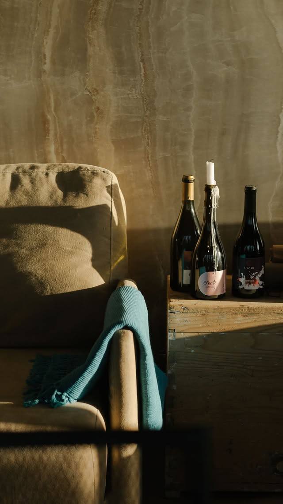
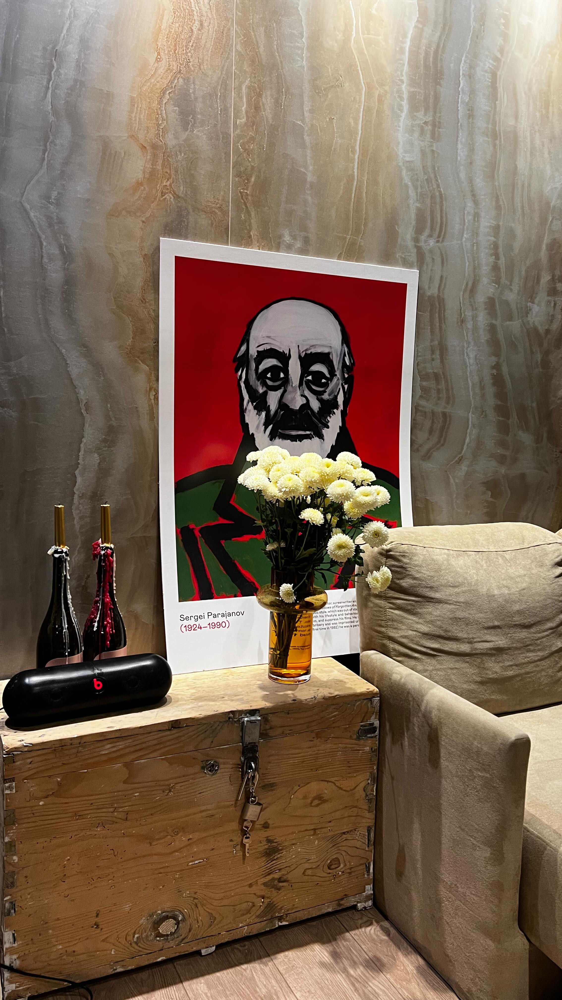
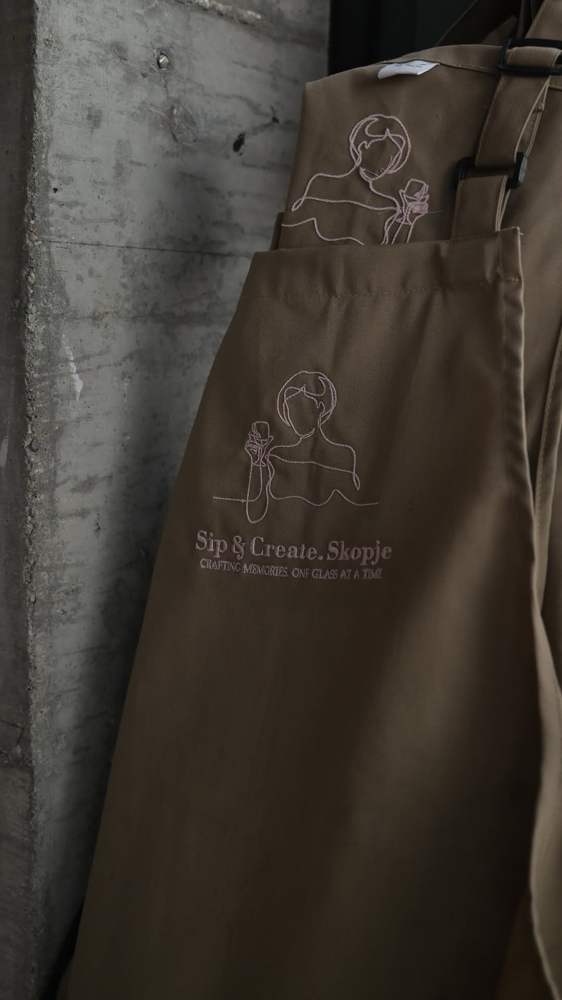
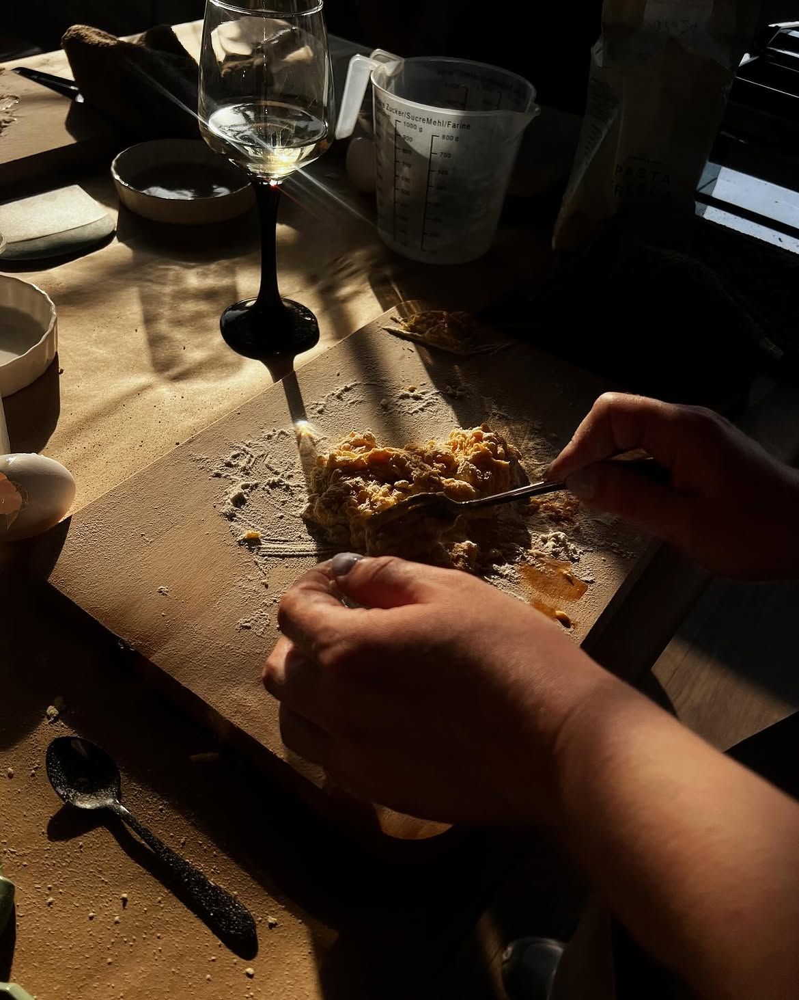
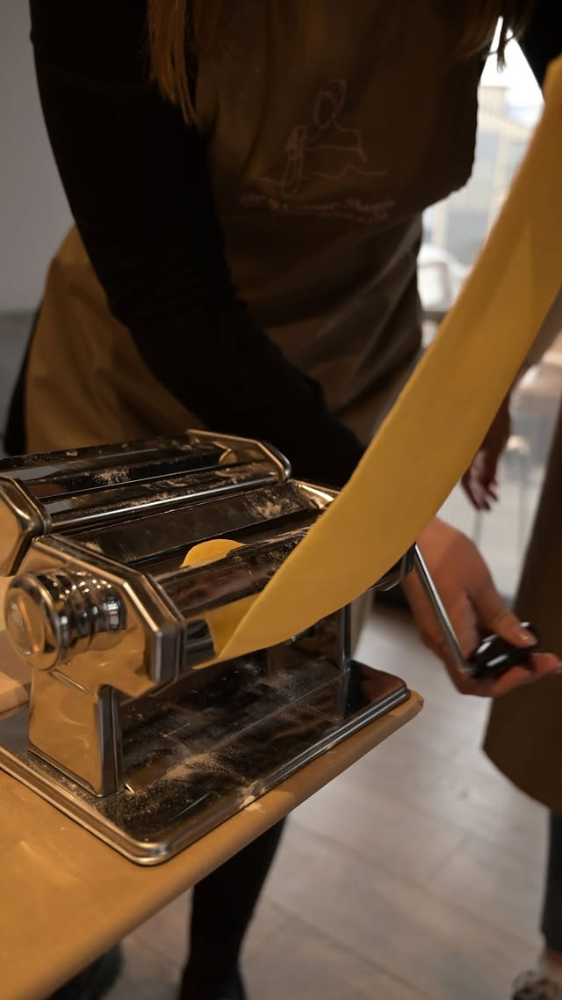
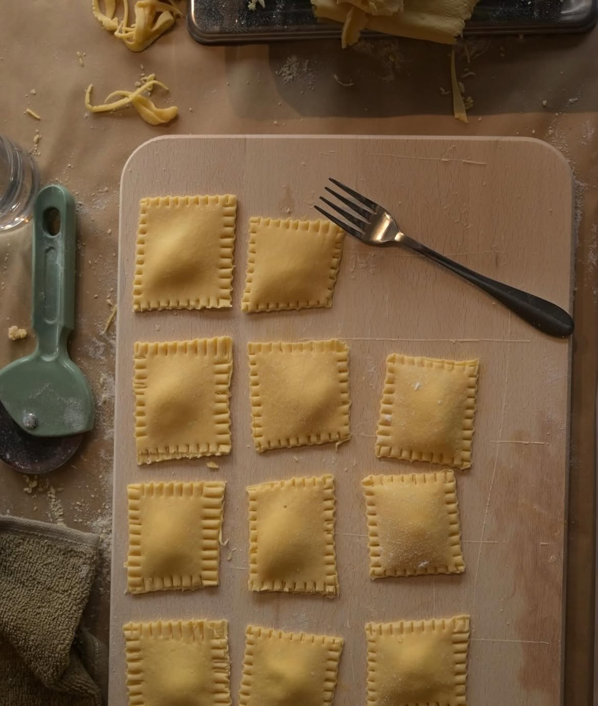
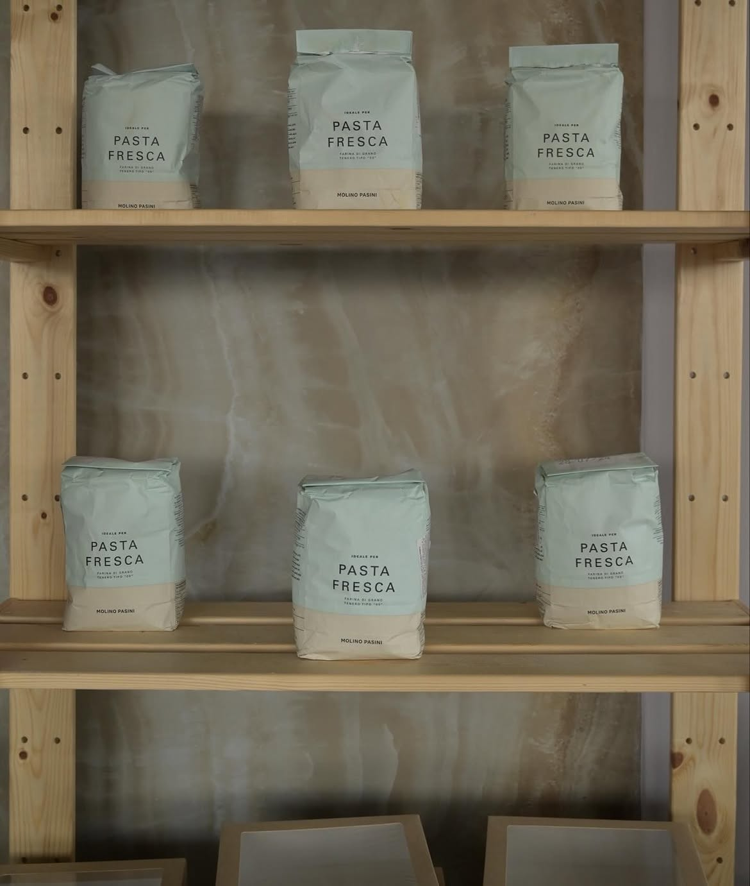
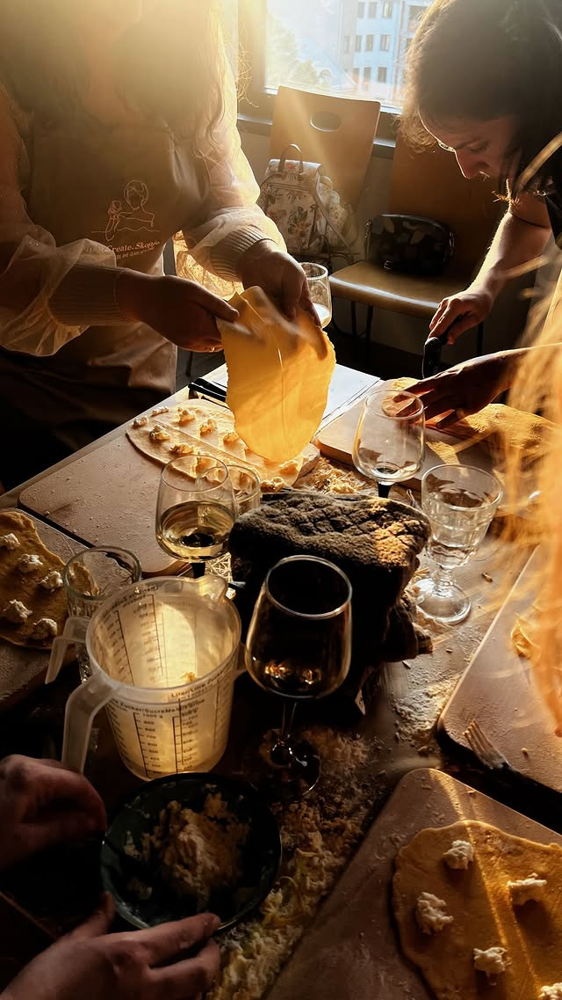

Come for the pasta.
Stay for the evening.
Warm tables, flour-covered hands, music in the background and a glass of wine within reach. The workshop is designed to feel less like a class and more like a night out.

A glass makes everything easier.


Everyone around the same table.

Expect a little flour everywhere.

Strangers at the start, friends by dessert.

Use the machine like a pro.

Cutting the ravioli.


Team work makes the dream work.